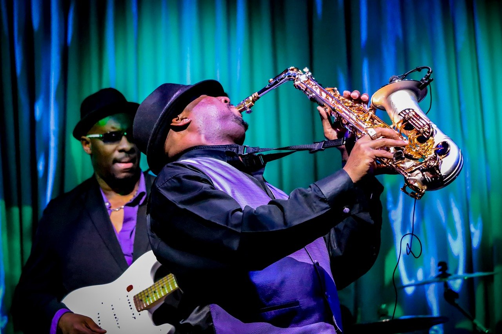
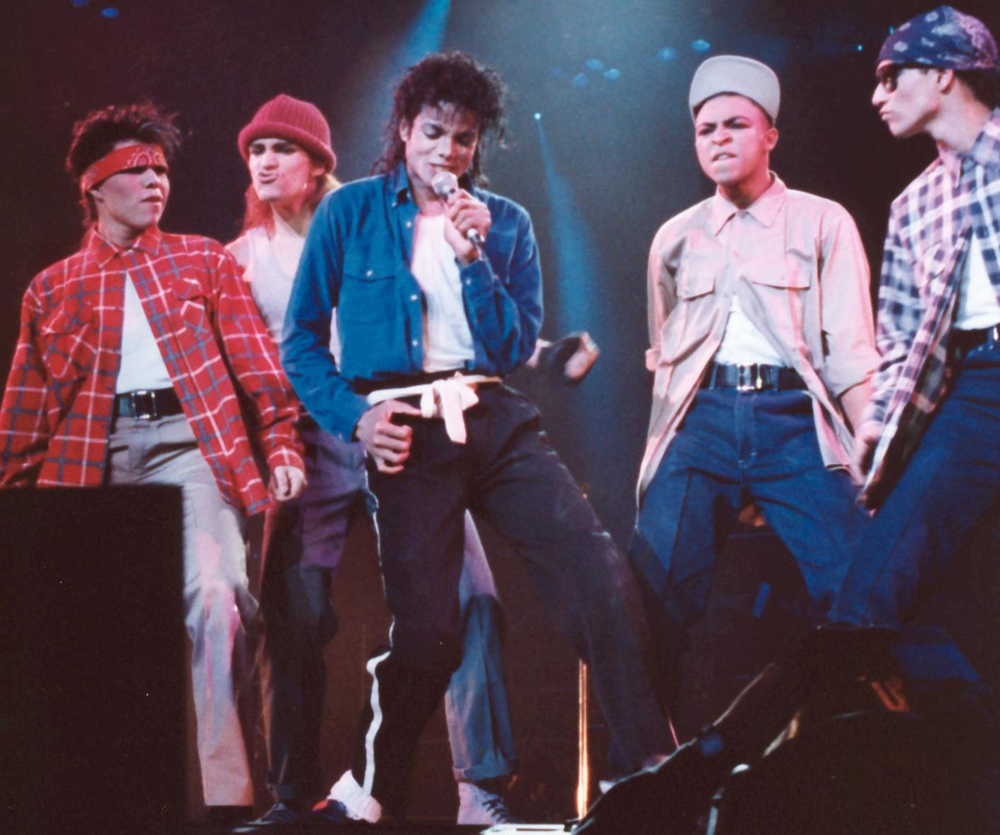
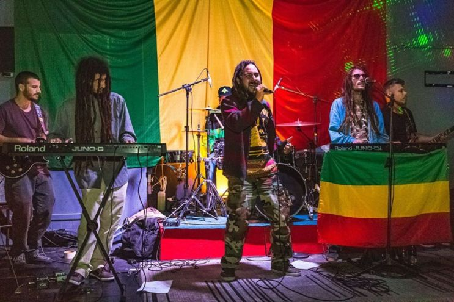

Os Principais Gêneros Musicas do Mundo
A música é uma das formas de expressão mais antigas e universais da humanidade. Ao longo dos séculos, ela se transformou, ramificou e refletiu a alma de diferentes culturas, épocas e contextos sociais. Compreender os principais gêneros musicais é entender a própria história moderna através dos sons.
1. Rock and Roll
Origem: Emergiu em meados da década de 1950 nos Estados Unidos. É o resultado direto da fusão do R&B (Rhythm and Blues) afro-americano com a música country e o western (hillbilly) branco. Artistas como Chuck Berry, Little Richard e Elvis Presley popularizaram essa nova sonoridade enérgica.
Essência: A energia crua, a rebeldia e a centralidade da guitarra elétrica, acompanhada por uma batida pulsante de bateria (o famoso ritmo backbeat). O rock sempre funcionou como uma voz de contestação e identificação para os jovens.
Evolução: Na década de 1960, a "Invasão Britânica" (com bandas como The Beatles e The Rolling Stones) elevou o gênero a um patamar artístico global. Nos anos 70, dividiu-se em vertentes monumentais como o Hard Rock (Led Zeppelin), o Progressivo (Pink Floyd) e o Punk Rock (The Sex Pistols, que recuperou a simplicidade e a fúria original). Nas décadas seguintes, gerou o Heavy Metal, o Grunge (anos 90) e o Indie Rock.
2. Jazz

Origem: Surgiu no final do século XIX e início do século XX em Nova Orleans, Luisiana. É fruto do encontro entre a música folclórica africana (trazida pelos escravizados, com forte ênfase em polirritmia e chamadas e respostas) e a harmonia e instrumentação europeias (bandas militares, hinos religiosos e música de salão), além de influências do blues e do ragtime
Essência: A liberdade de expressão, a improvisação e o "swing". No jazz, a partitura é apenas um guia; a verdadeira alma do gênero está na capacidade dos músicos de criarem melodias espontâneas em tempo real, interagindo uns com os outros em uma conversa instrumental.
Evolução: Começou como música de dança e entretenimento nas ruas e bordéis de Nova Orleans. Nas décadas de 1930 e 1940, ganhou as grandes orquestras na Era do Swing (Big Bands). Em seguida, evoluiu para o Bebop (ritmos mais rápidos e complexos para apreciação, não para dança), o Cool Jazz, o Free Jazz e, nas últimas décadas, fundiu-se com o rock e o funk, dando origem ao Jazz Fusion.
3. Pop

Origem: Suas raízes remontam ao Tin Pan Alley em Nova York (final do século XIX) e à indústria fonográfica que comercializava canções populares. No entanto, o "Pop" moderno nasceu na década de 1950 e 1960, impulsionado pelo rock and roll, pelo surgimento da cultura de massas, pela televisão e por gravadoras focadas em sucessos radiofônicos (como a Motown).
Essência: Melodias instantaneamente memoráveis, estruturas simples (verso-refrão), ganchos (hooks) marcantes e uma produção impecável. O Pop absorve tendências de todos os outros gêneros (eletrônica, hip-hop, rock, R&B) e as reempacota para o consumo global.
Evolução: Teve momentos de transformação sísmica liderados por ícones absolutos: os Beatles nos anos 60, Michael Jackson (o "Rei do Pop") nos anos 80, o fenômeno das boy/girl bands nos anos 90, e a era digital atual, onde o K-Pop (pop coreano) e divas globais dominam os streamings com produções ultravisuais.
4. Reggae

Origem: Desenvolveu-se na Jamaica no final da década de 1960. É o herdeiro direto de gêneros locais anteriores, como o Ska (mais rápido e festivo) e o Rocksteady (mais lento e cadenciado), fortemente influenciados pelo R&B norte-americano e pela música tradicional jamaicana (mento).
Essência: O contrabaixo marcante, a acentuação rítmica nos tempos fracos (o famoso skank na guitarra ou teclado) e as letras de forte teor político, espiritual e de exaltação ao movimento Rastafári. Artistas como Bob Marley levaram a mensagem de paz e união do reggae para todos os continentes.
Evolução: Expandiu-se internacionalmente nos anos 70 e 80, gerando subgêneros como o Dub (focado na experimentação de estúdio, eco e mixagem) e influenciando diretamente o nascimento do Dancehall e do próprio Hip-Hop nos Estados Unidos.
5. Hip-Hop
Origem: Nasceu no início da década de 1970 no bairro do Bronx, em Nova York, especialmente em festas de rua organizadas por DJs como Kool Herc. Os jovens negros e latinos usavam o toca-discos para isolar e estender as batidas de funk e soul (os breaks), enquanto os MCs (mestres de cerimônia) rimavam por cima para animar o público.
Essência: O ritmo sincopado (beat), a poesia falada e rimada (rap), a técnica dos DJs (scratch, mixagem) e o grafite. O hip-hop é a crônica social das ruas: fala sobre desigualdade, violência urbana, superação e celebração da identidade.
Evolução: Dos primeiros sucessos analógicos nos anos 80 (como Sugarhill Gang), o gênero passou pela Era de Ouro nos anos 90, marcada pelo contraste entre o rap da Costa Leste (Nova York) e da Costa Oeste (Califórnia, com o G-Funk). Evoluiu para um império global multimídia, incorporando elementos de trap, R&B contemporâneo e influências eletrônicas, tornando-se o som mais ouvido nas paradas de sucesso de todo o mundo.